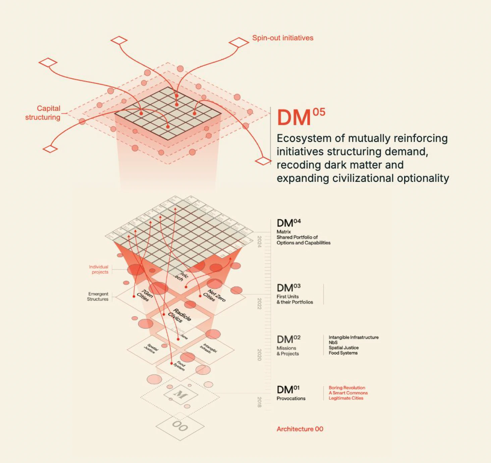

A decade of seed work — the kind that happens before there's an agreed programme, an established partnership or a committed budget — taught Dark Matter Labs what actually needs funding, and how to spend money well enough to be trusted with the next relationship. Next Futures is that decade, turned into capital that's already there the moment a relationship, a political moment, an emerging crisis or an opportunity to intervene opens. We're inviting partners who already trust our judgement to help craft and power it with us.
Dark Matter Labs is ten years into this work. Next Futures is what that decade has taught us about what actually needs funding, and how to spend money well enough to be trusted with the next relationship — the fund built to power DM's next ten years of exploration.
Much of our seed work takes place before there is an agreed programme, an established partnership or a committed budget. This work creates the conditions through which a possible transformation becomes something people can recognise, organise around and resource. Three factors shape what that actually costs.
These three overlap, and seed work usually carries all of them at once. The economics are easy to underestimate: later-funded programmes inherit relationships, recognition and commitments whose production they may never fully pay for. Their apparent viability can depend on costs we've already absorbed — through small reserves, bridging support and sustained overwork. That's the gap between doing this work and being resourced to do it, and it's what Next Futures exists to close.
A viable model for seed work needs capital that can be accessed quickly, sustained through the slow work of building shared recognition, and used to assemble commitments across people who don't yet have a reason to trust each other's follow-through. It also needs to accommodate inquiry that changes direction, or that never becomes a programme at all. Next Futures is DM's attempt at that model, seeded from our own core funding.
Next Futures is young, so this is shared in the spirit it's meant: honestly, including the moves still in play — and including the places where DM moved in time and is now the one waiting on someone else's board cycle.
Five live applications are currently running through Next Futures — here's where each stands.
"It's this same instinct for continuity that underpins DM's longest relationships."
A decade in, some of these are a live, named portfolio already. Others are a direction we're investing toward, not a finished thing — we're naming that difference rather than blurring it.
Every arc on this page started the same way: not with a cheque into a black box, but with a partner willing to co-invest time, relationships and judgement alongside DM, before the work had a name. Civic Square didn't just fund 3º Neighbourhoods — they helped shape it. Lankelly Chase didn't just extend Beyond the Rules ten times over — they built what came next with us.
The difficulty lies in funding work whose purpose includes establishing what needs to be funded. So what we're asking isn't a grant into the dark — it's a partnership: people who'll help us spot the next opening, shape the next story, and carry an arc somewhere neither of us could reach alone.
We're designing Next Futures as the first rung of a longer ladder — closer to how early-stage capital works than to a conventional grant cycle, but built for public value rather than a market return.
£25–50k, DM's own core funding plus aligned partners, already cleared to move. Proves whether a window was real.
A demonstrated multiplier, deep partnerships, or clear signs of scalability — the gateway to the next stage.
A more mature fund — potentially a dedicated tooling fund — for initiatives ready to go further.
Four pieces of work, four different things they say about how DM operates.
Continuously funded by Lankelly Chase since 2020, alongside the Democratic Society, Black Thrive and the York Multiple Complex Needs Network — an ongoing inquiry into the rules and governance structures that entrench severe disadvantage, and how to rewrite them.
DM leads policy and regulatory innovation design within NetZeroCities, the EU's support platform for its 100 Climate-Neutral and Smart Cities Mission — a Horizon Europe-funded consortium of 33 partners working across 112 cities.
DM's open-source platform for financing nature-based infrastructure is piloting in Glasgow with the city council, Scottish Water, Flood Re, Nationwide and Clyde Climate Forest, backed by the Esmée Fairbairn Foundation and NatureScot — turning trees into financeable flood infrastructure.
With Civic Square in Birmingham, DM has co-authored 3ºC Neighbourhood and Endowing the Future, and partnered on the Retrofit Reimagined festival — working as a peer alongside a neighbourhood-scale civic infrastructure team, not above one.
Next Futures didn't come from nowhere — it's a pattern DM has lived many times over the last ten years: a small, often tiny, piece of seed work that opens into a much longer arc. Four stories so far, told by the people who were there, with more being added as colleagues across DM send in theirs.
Six years ago, Beyond the Rules started as a small piece of work with Lankelly Chase, in partnership with the York Multiple Complex Needs Network, Black Thrive and the Democratic Society, on systemic governance. DM used it to build networks and go deep on how pay, grantmaking and contracts could be structured differently in collaborations. That led to further funded work with Lankelly Chase and other partners — including Arising Quo — across more than ten funding extensions, prototyping the alternative funding systems the work had described. It fed into Lankelly Chase's own decision to invite a portfolio of field practitioners to redesign how its full endowment could be orientated toward ecologies of resistance and transformation, and to relinquish its endowment to that process — and gave an initial blueprint for the Unfurling Collective, a collective of practitioners now moving £8m toward the field of alternative futures in the UK. The methodology is currently being applied across a range of UK contexts, from community asset construction collaborations to city-level, cross-sector portfolios.
A small slice of a Clean Cities commission — on the order of £20–30k — plus a modest top-up from Civic Square, seeded an early body of writing on the right to retrofit and what street-based, collective retrofit could look like. DM didn't fund what came next: Civic Square ran with it as the Retrofit Reimagined festival, growing from a single event into a second year of events across multiple UK cities, drawing in further funding including from the National Retrofit Hub. Three groups took the idea further from there, each independently funded — We Can Make (EU funding, now running live projects), Retrofit Balsall Heath (national government retrofit funding, grown into demonstrator work built on DM and Civic Square's early language), and Civic Square itself (channelling JRF funding into further delivery).
Dark Matter Labs co-invested with Civic Square into research into 3º Neighbourhoods — twinning UK neighbourhoods with the climate they'll face as warming reaches three degrees — and the Endowing the Future report, an analysis of the role of philanthropy in this moment to seed a network of demonstrators. The work reframed how Civic Square talked about their capital project and neighbourhood-scale climate transition, and travelled far and wide beyond the two organisations. It fed directly into Civic Square securing significant capital funding for that work upfront. We continue to work with them on how these approaches will be applied throughout the build of their neighbourhood public square, and on sharing open learning into the field.
Early retrofit work with Civic Square threw up a rough idea — a "solar endowment," using community energy ownership to help fund retrofit — which DM loosely developed into the Community Energy Trust concept. A handful of small, roughly £10k pieces of work followed, including with Barnet Council on where its energy strategy met its retrofit strategy for homes it doesn't own. That thread led to Repowered Communities Newham, a National Lottery-funded project worth a couple of million pounds, which DM joined through an existing relationship with Repowering London. It's since pulled DM into complex community-energy governance modelling, and into a wider network of UK groups — including Lothian Heat — trialling new ownership models for community energy.
Dark Matter Labs didn't arrive at an ecosystem — it built toward one, in five stages, from an unlabelled starting point before 2018 to the ecosystem it runs today. Next Futures sits inside the current one.

Three provocations — Boring Revolution, A Smart Commons, Legitimate Cities — staked out the territory before there was any portfolio to speak of.
Intangible Infrastructure, nature-based solutions, spatial justice, food systems — the provocations became missions, and the missions became funded projects.
Projects matured into standalone units, each building its own portfolio — 7Gen Cities, Radicle Civics and NetZeroCities among them.
Those portfolios became a shared matrix of options and capabilities — the units learning to see, and draw on, each other's work.
An ecosystem of mutually reinforcing initiatives — structuring demand, recoding dark matter, and expanding civilisational optionality. Spin-out initiatives on one side, capital structuring on the other.
As DM enters its next ten years, we're starting not with answers but with a growing, open set of questions emerging from the conversations we're already part of. These five are a sample of the first ten.
What would it mean for a species, such as whales, to constitute a nation and exercise collective agency across human borders?
What would a city need to become to sustain life in a world three degrees warmer?
How could securitised claims on verified resources and future productive value, underwritten by third parties, support present-day liquidity and new forms of money?
What would a world look like if everything owned itself, and people entered into relationships of use, care and obligation with it?
What infrastructure would make sufficient, healthy and ecologically sustainable nutrition universally accessible?
If you're already a fan of DM's work — or tired of watching the right moment pass while the paperwork catches up — we'd like to talk about partnering on this: not just backing an arc, but helping us craft and power the next one.
Ten years of DM got us here. This is how we power the next ten.